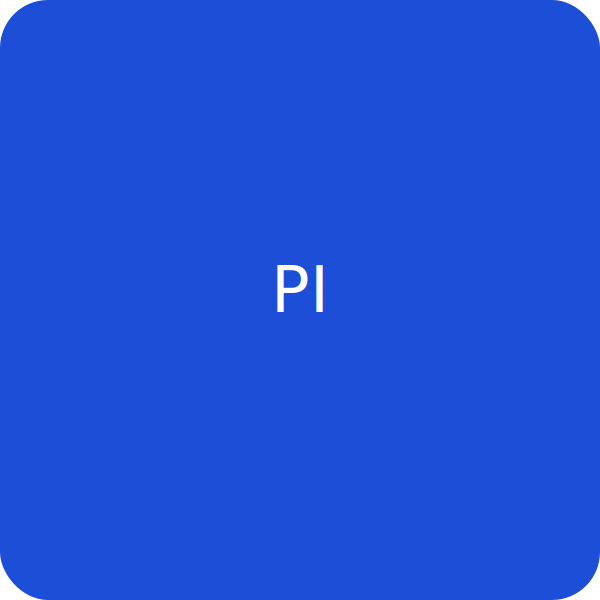

Ying (Grace) Chen, Ph.D.
Assistant Professor of Biomedical Engineering
Dr. Chen leads the Chen Bioengineering Lab, focusing on biomaterials and regenerative medicine for cardiovascular health. Her research integrates responsive materials, biofabrication, and mechanobiology to create therapies that restore function after heart and vascular injury.